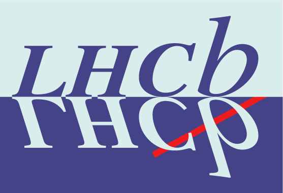
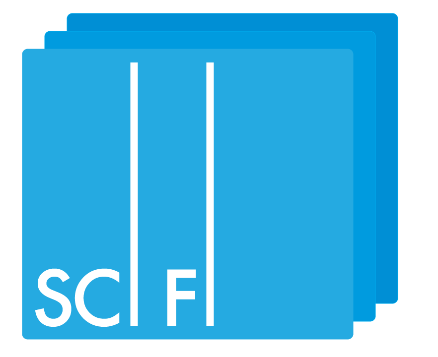
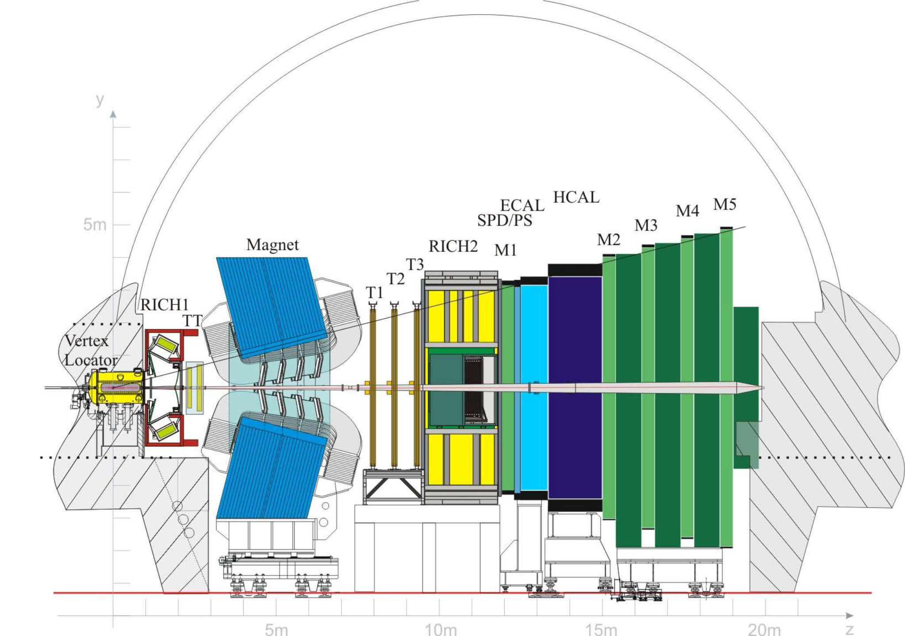
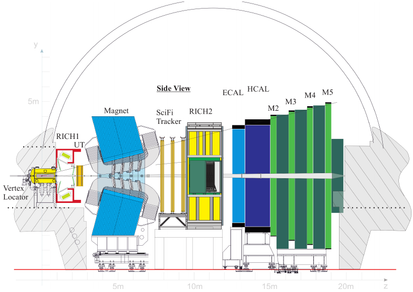

Simulation studies of scintillating fibre
mats for the LHCb upgrade


Inhaltsverzeichnis
Diese Präsentation beinhaltet:
- Vorstellung des LHCb Detektors und die Motivation des Upgrades
- Vorstellung des SciFi Trackers
- Testbeam Kampagne 2016 am CERN und anschließende Datenanalyse
- stand-alone Simulation von szintillierenden Fasermatten
- Zusammenfassung
Vorstellung des
LHCb Detektors und dessen Upgrade
Das LHCb Experiment
- LHCb misst CP-Verletzung im $B_{d}$ und $B_{s}$ Sytem, sucht nach Neuer Physik jenseits des Standardmodells
- Hauptanforderungen an den Detektor: zuverlässige Unterscheidung von $\pi$/$K$, hohe Zerfallszeit Auflösung, gute Auflösung von Teilchenmassen
- RICH: messen Teilchengeschwindigkeit über Cherenkov-Effekt, ermöglicht Teilchenidentifizierung (z.B. bei $\pi$ und $K$)
- VELO: misst 3D Track-Positionen zur Rekonstruktion von Vertices, ermöglicht u.A. Messung von Zerfallszeiten
- Tracking Stationen: ermöglicht Rekonstruktion von Teilchenspuren und Massen
Detektor Komponenten:
Detektor Upgrade
- instantane Luminosität wird auf $\mathcal{L}_{\text{inst}}= 2\cdot 10^{33}~\text{cm}^{-2}\text{s}^{-1}$ erhöht
- verbesserte Trigger Effizienz für eine Vielzahl an Zerfallskanälen
- Trigger: Einsatz eines vollen Software-Trigger Systems, benötigt Auslese des gesamten Detektors mit $40~\text{MHz}$ $\rightarrow$ Austausch der Front-End Elektronik
- Tracking: erhöhte $\mathcal{L}_{\text{inst}}$ verlangt nach höherer Granularität und Strahlenhärte der Tracking-Detektoren $\rightarrow$ Upgrade des VELO und TT, sowie Ersetzung von T1-T3 durch dem SciFi Tracker
Veränderungen:
Vorstellung des
SciFi Trackers
Anforderungen
- Hit-Effizienz so groß wie möglich ($\approx 99\,\%$) mit einer Rausch-Cluster-Rate von $\lt 10\,\%$
- räumliche Auflösung von $\le 100~\mu\text{m}$ in der Ablenkebene des Magneten
- Materialmenge innerhalb der Akzeptanz minimieren $(\chi/\chi_0 \le 1\,\%)$
- Auslese der Elektronik mit $40~\text{MHz}$
- Detektor sollte diese Anforderungen auch nach Bestrahlung in Höhe von $50~\text{fb}^{-1}$ erfüllen
Layout
- in allen $3$ Stationen sind $4$ Detektorlagen in $x$-$u$-$v$-$x$ Anordnung
- Detektorlagen bestehen aus $10$-$12$ Modulen mit jeweils $8$ Fasermatten
- Fasermatten haben $6$ Lagen aus $2.5~\text{m}$ langen szintillierenden Fasern,an einem Ende Spiegel am Anderen Auslese durch SiPMs

Szintillierende Fasern
- wenige $\text{eV}$ deponierter Energie reichen aus um das Polystyrol anzuregen
- Anregungsenergie geht auf P-Terphenyle via Förster-Effekt über $\rightarrow$ kürzere Relaxationszeit und bessere Lichtausbeute
- Verminderung von Selbstabsorption durch Wellenlängenschieber (TPB)
- Claddings haben abfallenden Brechungsindex $\rightarrow$ erhöht Lichteinfang auf ca. $10.7\,\%$
- wellenlängen und winkelabhängige Abschwächung des Lichts in der Faser


Silizium Photomultiplier (SiPM)
- Multi-Pixel Lawinenphotodioden im Geiger Modus
- SiPMs aus $128$ Kanälen mit je $4\times 26$ Pixeln
- einzelne Pixel können nur einmal pro Event feuern $\rightarrow N_{\text{photon}} \lt N_{\text{pixel}}$ um Sättigung einzuschränken
- Photonen-Detektions-Effizienz (PDE): $$\text{PDE} = \frac{N_{\text{detected}}}{N_{\text{total}}} = \epsilon_{\text{qe}}(\lambda) \cdot \epsilon_{\text{avalanche}}(V, T)\cdot \epsilon_{\text{geometric}}$$
- Rauscheffekte: thermisches Rauschen (DCR), Crosstalk und After-Pulse


Clusterbildung

- erzeugte Photonen können sich über mehrere SiPM-Kanäle verteilen
- Algorithmus kombiniert benachbarte ladungtragende Kanäle
- dabei werden Grenzwerte angewendet um Rauschsignale zu unterdrücken
- Information zur Teilchenposition aus ladungsgewichtetem Mittel
- wichtige Größen: Cluster Ladung, Cluster Größe und mittlere Signalposition
Analyse der
Testbeam Kampagne 2016
Datenaufnahme
-
Prototyp Fasermatten:
- $5$ lagige Matte $2014$ im LHC Tunnel bestrahlt
- $6$ lagige Matte $2015$ in der CERN PS IRRAD Einrichtung bestrahlt
- $6$ lagige Matte $2016$ in der CERN PS IRRAD Einrichtung bestrahlt (DUT) Bestrahlung soll Strahlenschaden nach der LHCb Upgrade Lebensdauer für Matten nahe der Strahlachse (worst case) entsprechen

Konvertierung der Rohdaten
-
Messungen zur Kalibrierung:
- Pedestal: Messung ohne aktive Lichtquelle
- Verstärkung: Messung mit angeschalteten LEDs
-
Umrechung der $ADC$ Zahl
$$ADC_{\text{eff}}=\frac{ADC_{\text{total}} - ADC_{\text{pedestal}}}{f_{\text{gain}}}$$

Selektion
-
Erzeugung eines möglichst 'sauberen' Datensatzes, d.h. Trennung von Events Rauschclustern, Sekundärteilchen
- Verstärkung: Messung mit angeschalteten LEDs
-
Umrechung der $ADC$ Zahl
$$ADC_{\text{eff}}=\frac{ADC_{\text{total}} - ADC_{\text{pedestal}}}{f_{\text{gain}}}$$